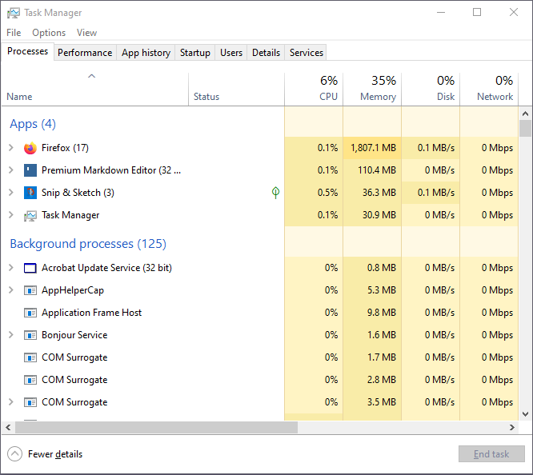
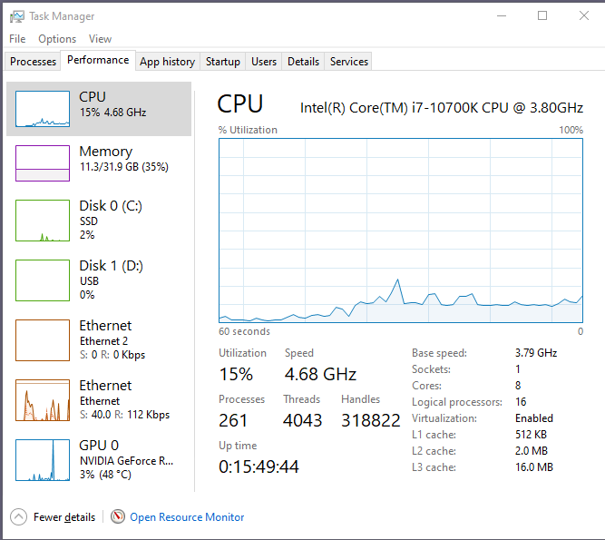
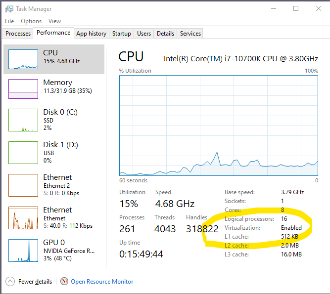
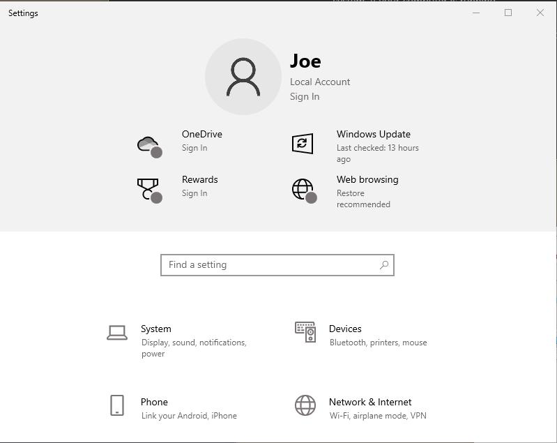
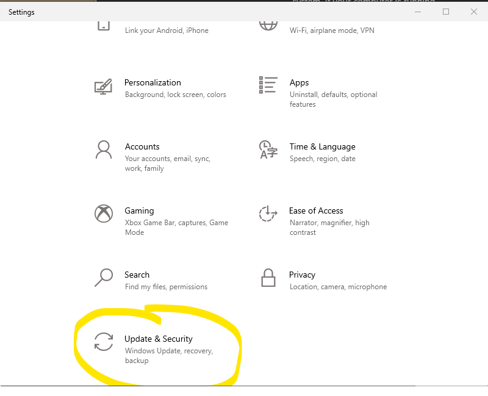
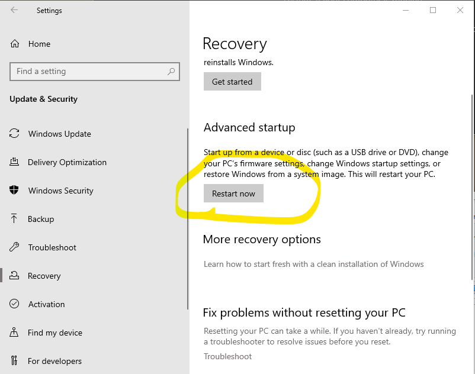
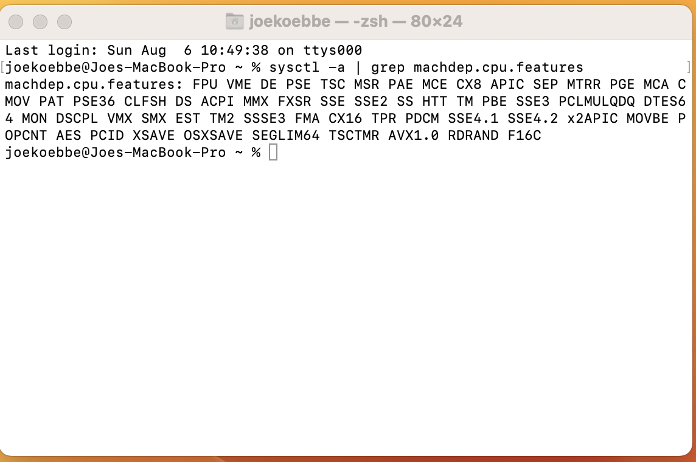

Virtualization is a technology, in the form of software, used to set up simulated virtual versions of computer hardware/resources on top of an existing physical computer. This may include emulation of operating systems, memory, storage, CPUs and so on. The end product of applying virtualization is a standalone virtual computer or multiple virtual computers all running on a single physical computer or server. Each of these machines can run asynchronously relative to the physical computer and any other virtual computers that have been deployed. To generate multiple virtual computers, the resources on a single physical computer are divided amongst the given number of virtual machines and the host computer in a way that allows all of the machines to do some amount of work independently.
Real world problems have become more complicated over the past several decades. Simulation of physical processes like weather, ocean current, and orbits of all kinds of cosmic masses are always in need of more computational resources. The computer hardware to solve the resulting mathematical problems necessarily must increase along with the size of the problem. Most software developers do not have direct access to massive physical hardware resources needed to provide adequate solutions. However a programmer can buy or rent access to resources through companies like Amazon and VMware. For the material in this course, we will only need to generate one or two virtual machines to complete our tasks. By the end of the course, students will be able to work with resources like AWS and VMware with ease. Note that computational resources through AWS or VMware will cost you a bit of money. Students will not need to purchase or rent time. Instead, we will use free software to generate virtual machines.
In the lesson on Virtual Machines , we will see one such product. We will use VirtualBox from Oracle - more on this in the near future. VirtualBox is a free piece of software provided by Oracle. There are a couple of things we will need to do before moving on to the instantiation of a VM.
Before we actually do anything too crazy, some of the features of virtualization are described.
All the features any developer wants:
Terms To Know
So, virtualization is an important concept. Most newer computers have the necessary resources to instantiate multiple virtual machines. The first step is to determine if the computer you are using allows hardware virtualization. If hardware virtualization is available, then we will need to make sure that your computer has hardware virtualization enabled. Not all computer vendors enable hardware virtualization as a factory default setting.
Note that you will only need to make a change one time if needed. You will not need to do this more than once on each computer you use and you can always undo this change in the CPU configuration on your computer. So, let's start with a quick check to see if your computer has hardware virtualization enabled and if not, is it possible to enable hardware virtualization on the computer on which you will be working.
There are a couple of ways to enable hardware virtualization on a Windows box. The following steps assume you are working on machine running either Windows 10 or Windows 11. The steps are the same for both.
Perform the following steps:



If there is no information, virtualization is not enabled or is not possible on the computer you are using. If the results show that virtualization is disabled, we will need to flip a flag to enable virtualization. The steps below will get you there.
Modifications to the BIOS can be a bit tricky and cause some people to cringe a bit in changing these settings. So, you will need to be careful when following the steps. There is a usually a way to recover when modifying the BIOS, but since we are only changing one setting, you should be ok with this. If not, there is another way given below.
In some implementations, you can do the save and exit in one step. When you have clicked on the "Exit" option or "Save and Exit" option the computer should boot up in the OS and behave pretty much as usual. You can check to see if the change worked by opening the Task Manager again and checking the CPU performance.
Since this process is carried out before any real applications are available, there are no pictures in this case. However, we will see how to get a screen shot of some of the operations once we have a virtual machine up an running - more on that a bit later.
For Windows 10 and 11 boxes there is a little easier way to get into the BIOS on your system. If your computer is running,



At this point the computer should start through a reboot to the BIOS settings menu. From that point on the steps from the previous method can be used. You will need to find the virtualization enable/disable toggle just like before and then "Save and Exit" to reboot and start working.
Unless you are extremely unlucky in your MacOS life, hardware virtualization will be enabled on your Macintosh/Apple computer. To see if your Mac is one of the many that already have hardware virtualization enabled, do the following.
sysctl -a | grep machdep.cpu.features

If you parse through the output there is a three character output, "VMX". This indicates that hardware virtualization is available on the Mac computer being used. If virtualization still needs to be enabled, you can start with the following approach.
If this still does not do the trick, see your instructor to make sure virtualization is enabled and available for the next content on virtual computers.
Question 1 Verify that the computer you are using for the class is able to handle hardware virtualization. Along with the apps/commands needed to determine whether or not hardware virtualization is enabled, include a screenshot that shows the computer is hardware virtualization enabled. Use something like Snip&Sketch or the equivalent Apple screen shot app.
Question 2 Read the article at the link:
and write a few sentences about the downside of running virtual computers on your laptop or desktop. Do not use ChatGPT or other AI application. After writing your answer to this question, run a request into ChatGPT to see what the bot finds. Compare your answer to the response from ChatGPT.
Question 3 Provide a screen shot of the resources available on your physical computer. How many cores, speed, and so on. You can find the information in the About tab in the Updates and Security section on the computer. Use a screen shot of the popup window.